Guía de Aidan – Domina al sanador con escudo de Hero Wars: Dominion Era
- Por: Alexandre Domingos. .
Aidan no es solo un sanador: es un sobreviviente de la tragedia, unido por el fuego y el destino a su hermana Kayla. En Hero Wars: Dominion Era, Aidan aporta curación poderosa y magia abrasadora al campo de batalla. Pero lo que lo hace realmente único es la vida que comparte con su hermana, formando uno de los dúos más complejos del juego a nivel emocional. Ya sea que quieras dominar su mecánica o entender su historia, aquí encontrarás lo que necesitas.
En esta guía descubrirás las fortalezas de Aidan, sus roles óptimos en combate y cómo liberar todo su potencial como Sanador y Mago de los Heraldos del Fuego. Veamos por qué la llama de Aidan brilla más en el corazón de tu equipo.

¿Quién es Aidan?
Aidan es un héroe de soporte de retaguardia cuyo rol principal es curar, potenciado por su vínculo con su hermana Kayla. Como miembro de los Heraldos del Fuego, su conexión única le permite canalizar magia ígnea devastadora mientras sostiene a sus aliados. Su origen está marcado por la tragedia, pero su determinación de proteger a los demás es inquebrantable.
- Función: Sanador/Mago
- Clase: Heraldos del Fuego
- Posición: Retaguardia
- Atributo principal: Inteligencia
Desde una tierra calcinada y perdida, Aidan aprendió de joven la dura verdad del fuego. Ese trauma forjó no solo su fuerza, sino también un vínculo inseparable con Kayla. No solo luchan juntos: viven como uno.
Los sanadores en Hero Wars suelen pasar desapercibidos, pero Aidan exige atención. Su sinergia con Kayla, sus curaciones potentes y su capacidad de penetrar la defensa mágica lo convierten en una pieza clave en muchas composiciones avanzadas de PvE y PvP.
Aidan – Estadísticas máximas
 Poder Poder185,104 |
 Salud Salud604,438 |
 Agilidad Agilidad2,319 |
 Inteligencia Inteligencia18,365 |
 Fuerza Fuerza2,985 |
 Ataque físico Ataque físico23,053 |
 Ataque mágico Ataque mágico139,708 |
 Armadura Armadura18,044 |
 Defensa mágica Defensa mágica45,221 |
 Penetración mágica Penetración mágica18,360 |
Ventajas y desventajas de Aidan - Hero Wars: Web y Facebook
✅ Ventajas
- Soporte versátil: Combina curación, escudos y daño de área para proteger y sostener al equipo.
- Gran sinergia con Kayla: La mecánica de vida compartida puede crear combinaciones de retaguardia muy resistentes.
- Posición en retaguardia: Permanece más seguro lejos del frente, lo que dificulta alcanzarlo en combates equilibrados.
- Quemadura y daño en área: Debilita a varios enemigos con Glifos y efectos de Ignición.
- Escala con Ataque Mágico: Fácil de potenciar con Libro, Glifos, Skins y Mascotas.
❌ Desventajas
- Vulnerable a asesinos de retaguardia: Contrarrestado por héroes como Hackebeil, Jhu y Kayla.
- Dependiente de energía: Necesita lanzar su definitiva con frecuencia; el control o negación de energía lo perjudica mucho.
- Sin control de masas: No tiene aturdimientos, silencios ni ralentizaciones; es soporte reactivo.
- Riesgo por vida compartida: Si Kayla o el aliado vinculado muere, Aidan puede caer rápidamente por el retorno de daño.
- Baja resistencia base: Sin escalar defensa, depende de escudos y posicionamiento para sobrevivir.
Prioridad de mejora de habilidades de Aidan - Hero Wars: Dominion Era
Domina las habilidades de Aidan entendiendo las fórmulas de daño y la prioridad de mejoras para maximizar su curación y su potencial ofensivo.
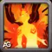
Abrazo del Fénix
Aidan coloca un escudo protector sobre sí mismo y sobre el aliado más lejano. Este escudo absorbe todo el daño recibido durante 5 segundos. Cuando el escudo del aliado termina, explota e inflige daño mágico a los enemigos cercanos, aplicándoles un Glifo del Fénix. El Glifo del Fénix es esencial porque permite que las otras habilidades de Aidan funcionen a pleno rendimiento.
Fórmula de durabilidad del escudo: 118,266 (80% Ataque Mágico + Nivel × 50)
Fórmula de daño de explosión del escudo: 31,356 (15% Ataque Mágico + Nivel × 80)
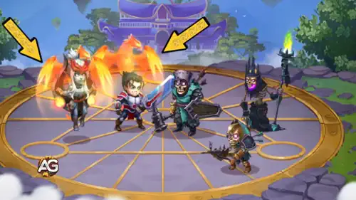
Prioridad de mejora: Muy alta – Es la definitiva de Aidan y la base de su kit. El escudo protege al equipo y la explosión inflige buen daño en área. Lo más importante: aplica el Glifo del Fénix, que potencia las otras habilidades. Mejórala primero porque aumenta defensa y ofensiva al mismo tiempo.
Ignición
Aidan apunta al enemigo más cercano sin un Glifo del Fénix y se lo aplica. Si todos los enemigos ya tienen un Glifo, lanza chispas desde el enemigo más cercano e inflige daño mágico a todos los enemigos alrededor del objetivo. El Glifo del Fénix aplica un efecto de Quemadura que inflige daño puro durante 6 segundos. El daño puro es especial porque ignora armadura y defensa mágica, lo que lo hace muy efectivo contra enemigos con mucha resistencia.
Fórmula de daño de Quemadura del Glifo del Fénix: 9,124 de daño puro por segundo (5.6% Ataque Mágico + Nivel × 10)
Fórmula de daño de chispas: 66,283 de daño mágico (40% Ataque Mágico + Nivel × 80)
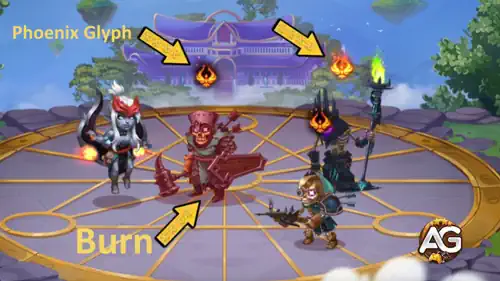
Prioridad de mejora: Alta – Es tu principal fuente de daño sostenido. El daño puro de la Quemadura es excelente para desgastar enemigos en combates largos, especialmente contra héroes con defensas altas. Mejora esta habilidad en segundo lugar para maximizar la contribución ofensiva de Aidan.
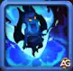
Fuego Interior
Aidan desata una onda de fuego que cura a todos los aliados excepto a sí mismo. Además, recupera vida una vez cada 2 segundos desde el inicio de la batalla. Cada vez que Aidan se cura a sí mismo, su siguiente onda de fuego se vuelve más fuerte y cura más al equipo. Cuando la salud de Aidan baja del 30%, se autoenciende y duplica su regeneración. Deja de arder cuando su salud supera el 60%.
Fórmula base de curación de la Onda de Fuego: 7,307 de curación por aliado (4.3% Ataque Mágico + Nivel × 10)
Fórmula de regeneración de vida de Aidan: 9,731 cada 2 segundos (6.5% Ataque Mágico + Nivel × 5)
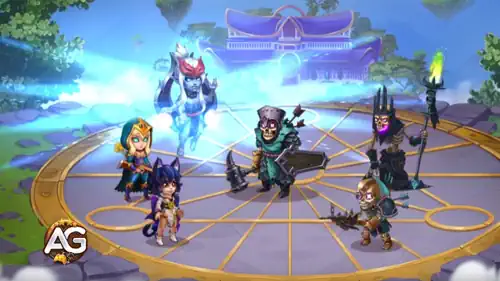
Prioridad de mejora: Media-Alta – Es la habilidad principal de curación de Aidan y mantiene vivo a tu equipo en combates largos. Su escalado (autocuración que potencia la curación del equipo) es fuerte, pero requiere tiempo. Es menos impactante en peleas rápidas. Mejora esta en tercer lugar, después de fortalecer daño y escudos.
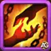
Vínculos de Llama
Aidan establece un vínculo mutuo con el aliado más lejano (o con Kayla si está en el equipo). El aliado vinculado se convierte en objetivo de Abrazo del Fénix. Los héroes vinculados comparten salud: cualquier curación o daño que reciba uno también se transfiere al otro. Ambos obtienen un bono que escala con sus estadísticas básicas de Armadura y Defensa Mágica. El vínculo se crea al inicio y solo se rompe si uno muere.
Fórmula de bono de Armadura y Defensa Mágica: 10% de bono (Nivel × 0.077 + 3.077%)
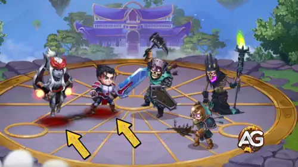
Prioridad de mejora: Media – Habilidad utilitaria con bonos defensivos y sinergia, especialmente con Kayla. Sin embargo, el escalado por nivel es pequeño comparado con otras habilidades. Mejora esta al final y prioriza las otras tres para maximizar el rendimiento.
Mejor patronazgo para Aidan
Descubre qué mascota potencia mejor la curación y el daño mágico de Aidan en Hero Wars: Dominion Era. La sinergia de patronazgo es clave.
1.º lugar:

Merlin
Merlin potencia las fortalezas principales de Aidan: penetración mágica y ataque mágico. El aumento de velocidad de habilidad mejora la aplicación de Glifos y el ritmo de las ondas de curación, algo crítico para maximizar daño y soporte. Es el patronazgo más consistente e impactante.
2.º lugar:

Albus aumenta el daño puro infligido, lo que funciona muy bien con las quemaduras del Glifo del Fénix. Esto vuelve a Aidan más letal contra jefes o en batallas prolongadas, sobre todo si lo enfocas en el rol ofensivo. No ayuda tanto a curar, pero es excelente para builds orientadas a daño.
3.º lugar:

Khorus otorga escudos basados en el daño mágico y la vida faltante. Aunque es interesante en teoría, el escudo es más difícil de controlar y menos fiable que el impacto de Merlin o el bono de quemadura de Albus. Mejor en configuraciones defensivas de nicho, especialmente si usas a Aidan para escudos sostenidos.
Mejor skin para Aidan - Hero Wars: Dominion Era
Aumenta la curación y el poder mágico de Aidan con las skins correctas. Prioriza por eficacia en batalla, no solo por apariencia.
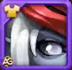
Skin por defecto (Inteligencia)
+1,365 Inteligencia
Cada punto = +3 Ataque Mágico, +1 Defensa Mágica
Prioridad de mejora: Muy alta – Esta skin potencia el atributo principal de Aidan. La Inteligencia mejora tanto la curación como el daño de todas sus habilidades. Es imprescindible maxearla.
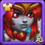
Skin Solar
+10,650 Ataque Mágico
Prioridad de mejora: Alta – Añade un gran aumento plano al efecto de todas las habilidades. Es perfecta después de subir la skin de Inteligencia. Mejora tanto el daño como la curación.
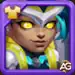
Skin Cibernética
+106,645 Salud
Prioridad de mejora: Media-Alta – Aumenta la supervivencia de Aidan, ayudando a que se mantenga vivo para curar más tiempo. Muy buena para resistencia en PvP.
Skin de Máscara
+10,650 Defensa Mágica
Prioridad de mejora: Media – Protege contra enemigos orientados a magia, pero no potencia curación ni daño. Útil de forma situacional.
Prioridad de evolución de artefactos de Aidan - Hero Wars: Dominion Era
Aprende qué artefactos subir primero para maximizar curación, daño mágico y soporte de equipo.
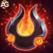
Artefacto de arma:
Sello del Fénix – Otorga +50,190 de Armadura y +12,547 de Poder de Habilidad. Cuando Aidan usa su definitiva (Abrazo del Fénix), activa este artefacto y concede Armadura adicional a todo el equipo durante 9 segundos. El aumento base de Armadura mejora mucho la defensa física de Aidan, mientras que el Poder de Habilidad potencia la efectividad de todas sus habilidades.
Prioridad de mejora: Alta – La Armadura y el Poder de Habilidad permanentes hacen que este artefacto sea valioso. La Armadura ayuda a Aidan a sobrevivir contra daños físicos y el Poder de Habilidad aumenta curación y daño. Súbelo como tercera prioridad, después del Libro y el Anillo.

Artefacto de libro:
Tomo del Conocimiento Arcano – Otorga +16,731 de Ataque Mágico y +83,649 de Salud. El Ataque Mágico mejora directamente todas las habilidades clave de Aidan, incluyendo curación, quemaduras, escudos y daño de explosión. La Salud extra lo mantiene vivo más tiempo para aportar utilidad sostenida.
Prioridad de mejora: Muy alta – Este es el artefacto más importante de Aidan. El Ataque Mágico potencia todo su kit y la Salud incrementa su supervivencia.

Artefacto de anillo:
Anillo de Inteligencia – Otorga +6,249 de Inteligencia, que se convierte en +18,747 de Ataque Mágico y +6,249 de Defensa Mágica. Fortalece habilidades y defensas de forma pasiva.
Prioridad de mejora: Alta – La Inteligencia aumenta Ataque Mágico y Defensa Mágica, mejorando curación y resistencia. Es el segundo mejor para subir.
Glifos — Prioridad de evolución (Aidan)
Resumen breve: prioriza Ataque Mágico primero, luego Inteligencia para mejorar la curación y la escala de daño puro; después Penetración Mágica, Salud y por último Defensa Mágica.
Por qué este orden de prioridad (explicado de forma simple)
- Ataque Mágico (Muy alto): mejora todo lo ofensivo de Aidan: la explosión del escudo, las chispas de Ignición e incluso la curación que escala con Ataque Mágico. Más Ataque Mágico aumenta directamente su curación y daño.
- Inteligencia (Alta): se convierte en Ataque Mágico y Defensa Mágica (y algo de Ataque físico). Para Aidan, la conversión a Ataque Mágico es especialmente valiosa porque mejora tanto sus curaciones como los componentes de daño puro del kit. El daño puro ignora defensas, por lo que Inteligencia aporta beneficio incluso cuando la penetración no esté disponible.
- Penetración Mágica (Media-Alta): sigue siendo útil frente a equipos con alta Defensa Mágica, pero es menos crítica para Aidan que la Inteligencia, ya que parte de su daño (la quemadura/puro) atraviesa defensas.
- Salud (Media-Alta): aumenta la supervivencia de Aidan y del aliado vinculado; más vida significa que las curaciones y los escudos tienen más tiempo para actuar.
- Defensa Mágica (Media): reduce el daño mágico recibido; útil en combates largos, pero menor prioridad que los atributos que aumentan directamente curación y daño.
1.º Glifo – Ataque Mágico: +6500
Prioridad de evolución: Muy alta – Amplifica las explosiones del escudo, las chispas y la curación que escala; primera prioridad para aumentar el impacto ofensivo y de soporte.
2.º Glifo – Inteligencia: +1135
Prioridad de evolución: Alta – Se convierte en Ataque Mágico y Defensa Mágica. Para Aidan, la conversión a Ataque Mágico mejora fuertemente sus curaciones y la quemadura de daño puro, siendo la mejor elección secundaria para builds de soporte.
3.º Glifo – Penetración Mágica: +6500
Prioridad de evolución: Media-Alta – Hace que los ataques y las explosiones sean más efectivos contra objetivos con alta defensa mágica; elige esto cuando la meta tenga muchos tanques mágicos, pero considera Inteligencia primero para la escala de curación/daño puro de Aidan.
4.º Glifo – Salud: +62,200
Prioridad de evolución: Media-Alta – Aumenta la durabilidad del dúo vinculado; bueno para sobrevivir a ráfagas y permitir que las curaciones surtan efecto.
5.º Glifo – Defensa Mágica: +6500
Prioridad de evolución: Media – Reduce el daño mágico recibido; útil en combates largos, pero menor prioridad que los atributos que aumentan directamente curación y daño.
Ganancias relacionadas con Inteligencia:
- Inteligencia: +1135
- - Ataque Mágico por punto de Inteligencia (convertido): ~3.405
- - Defensa Mágica por punto de Inteligencia: +1 (total +1135)
- - Ataque físico: +1 por punto de Inteligencia (cuando aplica)
Cómo contrarrestar a Aidan en Hero Wars: Dominion Era

Hackebeil
Hackebeil arrastra a Aidan a la primera línea con su gancho, exponiéndolo al daño explosivo e interrumpiendo su capacidad de proteger o curar con seguridad.

Corvus castiga el daño en área y las curaciones prolongadas con su Altar de Almas, reflejando daño y reduciendo la efectividad del soporte de Aidan.

Jhu
Jhu apunta al enemigo más distante (a menudo Aidan por su posición) y puede eliminarlo rápidamente antes de que complete su ciclo de curación.

Jorgen
Jorgen puede bloquear la ganancia de energía y redirigir ataques hacia la retaguardia, retrasando la definitiva de Aidan e interrumpiendo su ritmo de soporte.

Kayla
Kayla salta a la retaguardia y suele apuntar al enemigo más lejano, frecuentemente Aidan. Sus ataques físicos rápidos y quemaduras atraviesan su escudo y superan su curación, siendo una amenaza que puede eliminarlo temprano.

Luther
Luther puede saltar a la retaguardia al inicio del combate y presionar a Aidan de inmediato, impidiendo que prepare escudos o cure con seguridad.
Mejores banderas de guerra para Aidan
Descubre qué Banderas de Guerra potencian la curación, la utilidad mágica y el soporte general de Aidan en Hero Wars: Dominion Era.

Bandera de Guerra de Recuperación:
Esta bandera aumenta toda la curación en un 10%, amplificando de forma notable las ondas de Fuego Interior y la regeneración de Aidan. Como su rol principal es curar y proteger al equipo, mejora su impacto en combates largos.
Beneficio para Aidan y el equipo: La curación se vuelve más efectiva, ayudando al equipo a sobrevivir al daño explosivo y a sostenerse en peleas prolongadas.

Bandera de Guerra de Declive:
Esta bandera reduce la curación del equipo enemigo en un 10%, lo que ayuda a contrarrestar sanadores rivales y a superar composiciones defensivas. Combinada con el daño por quemadura y la curación sostenida de Aidan, brinda una ventaja estratégica.
Beneficio para Aidan y el equipo: Debilita la capacidad del enemigo de recuperarse mientras Aidan sostiene a tu equipo, favoreciendo combates de desgaste.

Bandera de Guerra de Fuerza de Mascota:
Aumenta el Poder de Habilidad de las mascotas en un 10%, mejorando indirectamente el desempeño de Aidan cuando cuenta con apoyo de mascotas como Merlin o Khorus.
Beneficio para Aidan y el equipo: Incrementa la efectividad de mascotas de soporte, añadiendo sinergia y utilidad extra.
| Mejores equipos de Aidan #1 | |||||
|---|---|---|---|---|---|
| #1 |
|
|
|
|
|
|
|
|
|
|
|
|
Estrategia del equipo #1
Esta composición combina la curación sostenida de Aidan con el daño de transformación de Ishmael. Nebulosa amplifica el daño basado en golpes críticos de Ishmael, aumentando significativamente su potencial de ráfaga durante la transformación. Sebastian aporta daño puro adicional con su habilidad activa y ofrece protección crítica eliminando todos los perjuicios del equipo, manteniendo vivos a tus causantes de daño en combates prolongados.
| Mejores equipos de Aidan #2 | |||||
|---|---|---|---|---|---|
| #2 |
|
|
|
|
|
|
|
|
|
|
|
|
Estrategia del equipo #2
Esta composición combina la curación sostenida de Aidan con el daño de transformación de Ishmael. Lara Croft aporta daño físico adicional y curación extra, creando un enfoque ofensivo equilibrado. Sebastian añade daño puro con su habilidad activa y ofrece protección crítica eliminando debuffs del equipo, manteniendo vivos a tus DPS en combates prolongados.
Los requisitos de desarrollo se centran en maximizar la Ascensión de Ishmael y mejorar sus artefactos. La ranura de Lara Croft puede intercambiarse por Nebulosa cuando necesitas máxima amplificación de Inteligencia para el daño explosivo de Ishmael.
Sebastian como contra-meta: Este equipo rinde muy bien contra la meta actual de Augustus + Orion. Los escudos de inmunidad de Sebastian bloquean completamente los estallidos de daño puro de Augustus, neutralizando una de las estrategias ofensivas más populares. Esto hace que el Equipo #2 sea excelente tanto para defensa (muchos rivales atacan con Augustus + Orion) como para ataque al contrarrestar esa composición.
| Mejores equipos de Aidan #3 | |||||
|---|---|---|---|---|---|
| #3 |
|
|
|
|
|
|
|
|
|
|
|
|
Estrategia del equipo #3
Esta composición representa la variante defensiva de la meta de Augustus que se popularizó en 2024. Augustus se adoptó rápidamente porque los jugadores podían integrarlo en sus plantillas con cambios mínimos: solo subirlo de nivel bastaba para crear una alineación competitiva.
La combinación de Augustus + Orion aporta daño puro constante que atraviesa defensas convencionales, mientras Dante ofrece la base defensiva mediante mitigación basada en esquiva. Sebastian añade protección de inmunidad, haciendo esta configuración muy resistente contra equipos con mucho control. La curación sostenida de Aidan mantiene a Dante con vida para que su mecánica de esquiva brille en combates largos.
| Mejores equipos de Aidan #4 | |||||
|---|---|---|---|---|---|
| #4 |
|
|
|
|
|
|
|
|
|
|
|
|
Estrategia del equipo #4
Esta composición representa la variante ofensiva de la estrategia de Augustus que revolucionó la construcción de equipos en 2024. La adopción masiva de equipos basados en Augustus ocurrió porque los jugadores podían colocarlo fácilmente en alineaciones existentes, requiriendo solo un desarrollo básico para obtener resultados competitivos inmediatos.
Augustus + Orion forman el núcleo ofensivo, infligiendo daño puro que ignora armadura y defensa mágica. Nebulosa amplifica su salida basada en Ataque Mágico, aumentando mucho el potencial de ráfaga. Dante ancla la defensa mediante esquiva combinada con la curación continua de Aidan, creando una primera línea duradera que compra tiempo para eliminar amenazas.
Esta formación destaca en escenarios ofensivos, pero tiene dificultades contra contraestrategias evolucionadas. Equipos defensivos con Sebastian pueden bloquear por completo el daño de Augustus, y composiciones con asesinos fuertes de retaguardia pueden eliminar a Orion antes de que contribuya. La ranura de Nebulosa puede cambiarse por Martha cuando se necesite curación adicional para sostener a Dante bajo presión física intensa.
| Mejor equipo meta de Aidan 2026 | |||||
|---|---|---|---|---|---|
| #1 |
|
|
|
|
|
|
|
|
|
|
|
|
Estrategia del mejor equipo meta 2026
Esta composición representa la estrategia meta evolucionada para 2026, maximizando la salida de daño mágico de Augustus mientras aporta soporte excepcional y supervivencia. Aidan y Cascade trabajan en sinergia para aumentar el potencial de daño de Augustus, con Electra como tanque resistente que absorbe daño de aliados y contribuye con daño mágico adicional. La penetración mágica de Orion asegura que los ataques de Augustus atraviesen defensas enemigas, mientras Khorus ofrece protección crucial contra efectos de control, permitiendo que Augustus mantenga su presencia ofensiva durante la batalla.
Bandera de guerra recomendada: Escarcha
Para esta composición, se recomienda la Bandera de Guerra de Escarcha. Cada 18 segundos, Escarcha se lanza sobre los enemigos, reduciendo el nivel de sus habilidades en 2 durante 8 segundos. Esta interrupción debilita supports, sanadores y héroes de control, otorgando una ventaja decisiva en combates largos.
La combinación de la curación sostenida de Aidan, la amplificación de soporte de Cascade y el daño puro de Augustus + Orion crea un núcleo ofensivo formidable capaz de dominar la meta actual. El rol dual de Electra (tanque que absorbe daño y fuente de daño mágico) añade gran durabilidad y versatilidad, haciendo al equipo muy resistente contra diversas estrategias de contraataque.
Conclusión – Aidan en Hero Wars: Dominion Era
Aidan destaca como uno de los héroes de soporte más versátiles en Hero Wars: Dominion Era, combinando curación sostenida, escudos protectores y daño por quemadura en área. Su rol es vital en equipos que dependen de la supervivencia a largo plazo y de sinergias basadas en magia.
Aunque es vulnerable a asesinos de retaguardia y al control de energía, Aidan sobresale cuando está bien posicionado y respaldado por aliados que amplifican su potencial. Invertir bien en sus artefactos, banderas de guerra y composiciones puede convertir a Aidan en un ancla defensiva y una fuente constante de presión.
En resumen, si buscas un héroe que mantenga vivo a tu equipo mientras desgasta a los enemigos con el tiempo, Aidan es una excelente incorporación para tu plantilla en la Dominion Era.
¡Explora nuevas habilidades con nuestros héroes destacados!


¡Deja tu opinión!
¿Te gustó nuestra guía de Aidan para Hero Wars Web y Facebook? ¿Hay algo que no entendiste o quieres sugerir cambios? Te invitamos a unirte a la sección de comentarios del blog Alexandre Games. Siéntete libre de expresar tu opinión, aclarar tus dudas y compartir tus sugerencias.
Haz clic en el botón abajo para comenzar: